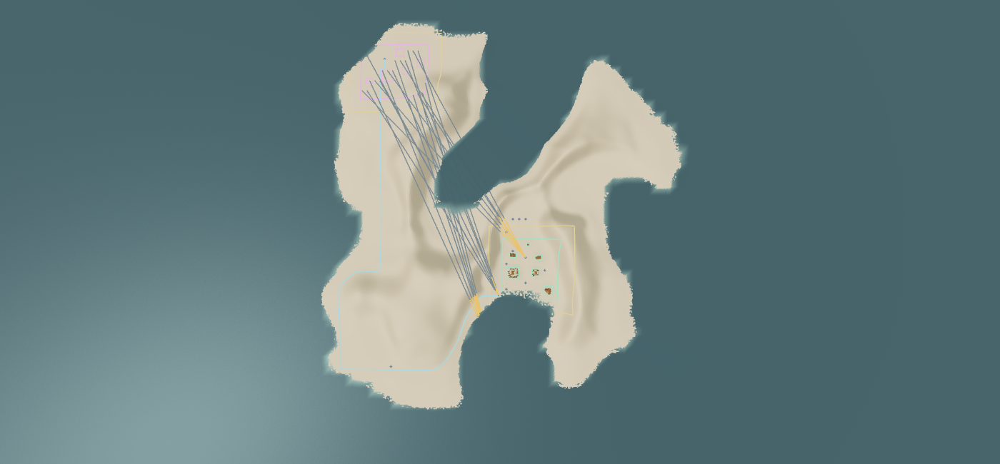
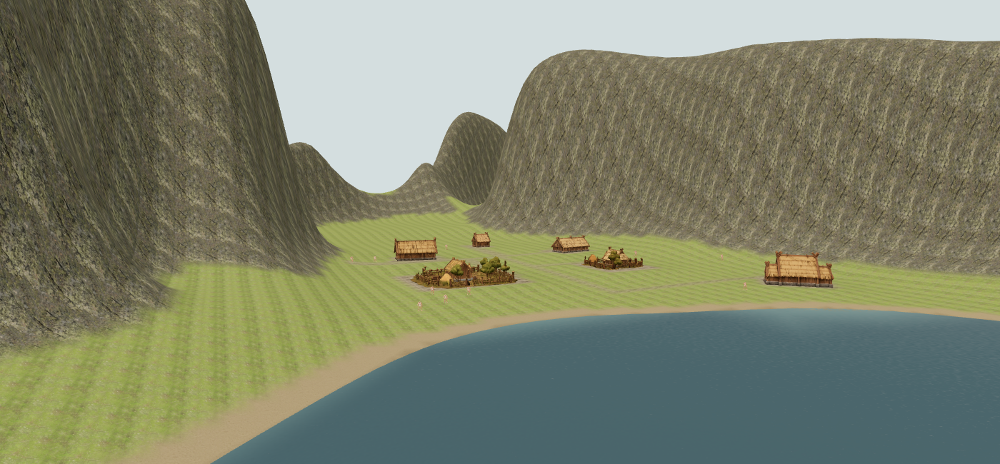
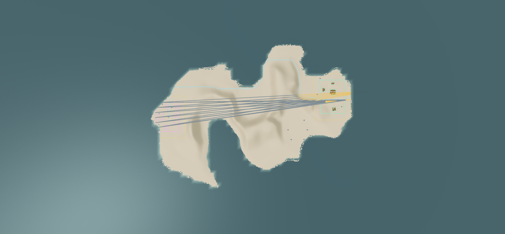
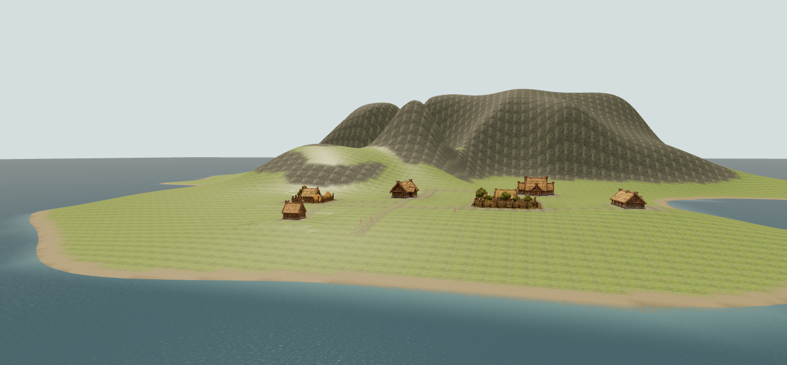
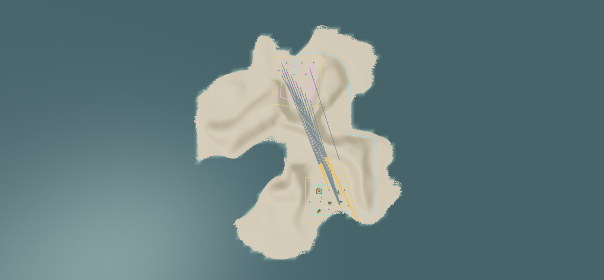
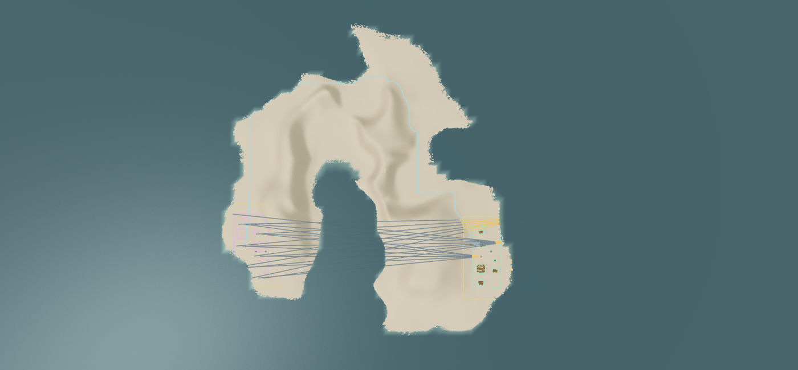
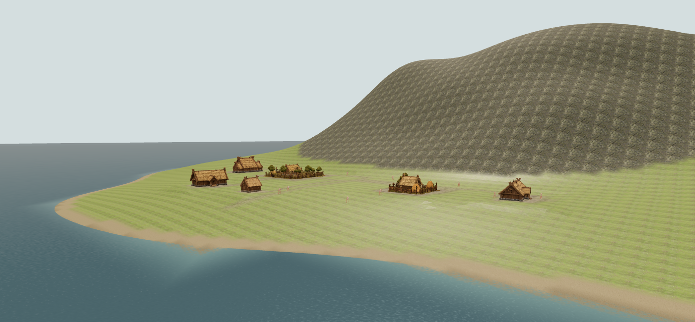
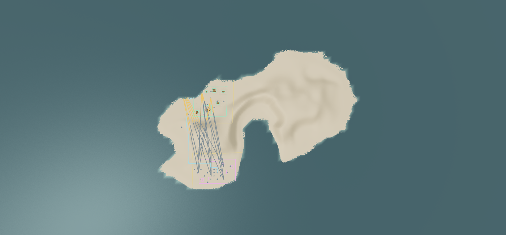
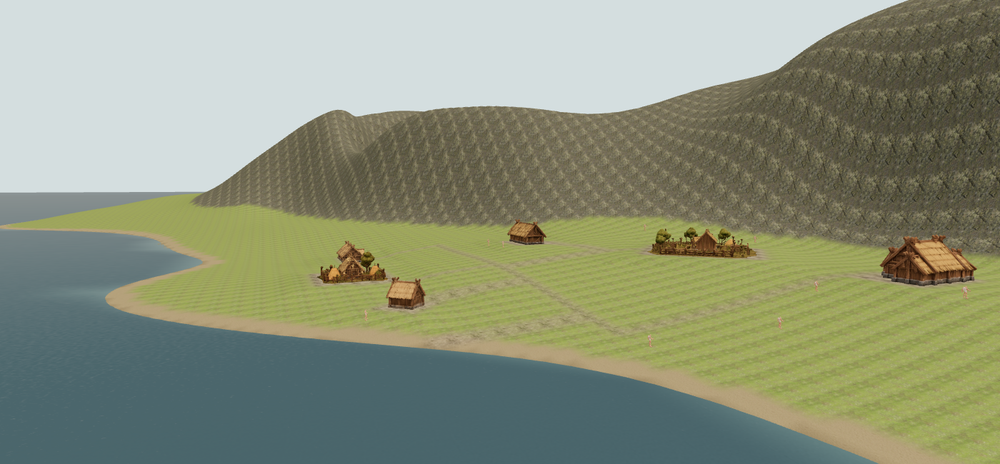
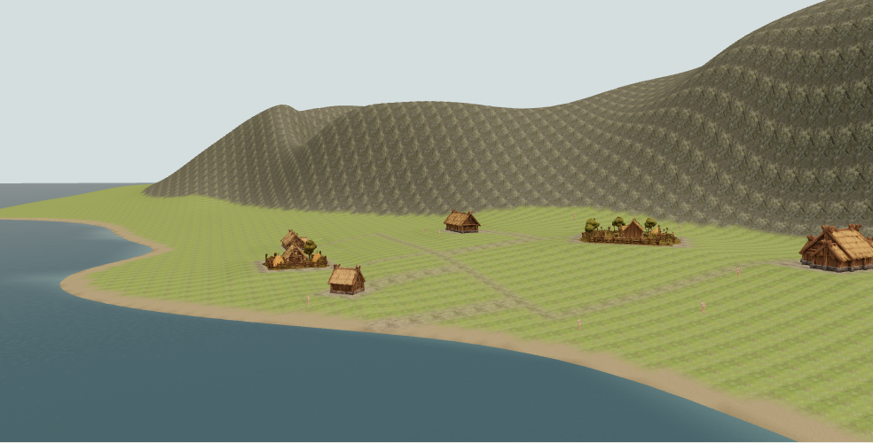

Settlement placement refinement
Issue #134 / PR #139 - same terrain, stronger placement search.
5/10 fixed seeds accepted (previously 1/10). No changed seeds, smaller parcels or relaxed limits. The PR remains draft for review; 5/10 is still a limitation.
Full report and compartment evidence · Ten-seed measurement · Browser evidence · Founding versus expansion · Original review
Environment Lab → Settings → Nordic Island → Player & hidden rival sites → one of 42, 1983, 18, 211, 819 → Generate World.
Green: player; pink: reserved rival; gold: neutral buffers; cyan: natural walking route; orange: terrain-blocked rays. The overlay draws a representative subset; exports retain every measured ray.
Seed 42
380.1m between centers; 246.5m construction gap; 920m walking route; 1932 terrain-blocked roof-height rays.

Overhead reservations and route.
Actual start camera used in the proof. Nature and fog disabled.
Seed 1983
522.4m between centers; 434.6m construction gap; 872m walking route; 1440 terrain-blocked roof-height rays.

Overhead reservations and route.
Actual start camera used in the proof. Nature and fog disabled.
Seed 18
313.2m between centers; 220.2m construction gap; 772m walking route; 1575 terrain-blocked roof-height rays.

Overhead reservations and route. Actual start camera used in the proof. Nature and fog disabled.
Actual start camera used in the proof. Nature and fog disabled.
Seed 211
460.4m between centers; 399.1m construction gap; 1162m walking route; 1881 terrain-blocked roof-height rays.

Overhead reservations and route.
Actual start camera used in the proof. Nature and fog disabled.
Seed 819
230.9m between centers; 131.8m construction gap; 389m walking route; 1800 terrain-blocked roof-height rays.

Overhead reservations and route.
Actual start camera used in the proof. Nature and fog disabled.
Tablet viewport
1024 × 768 browser emulation, not a physical-device certification.
